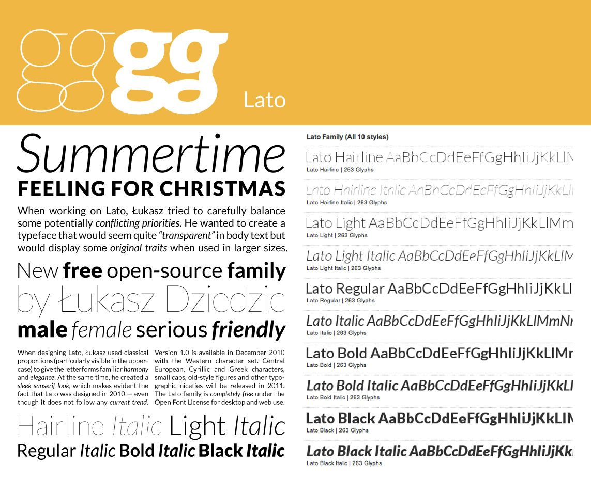

OCUI Styleguide
OCUI is based on Bootstrap, and uses Bootstrap's color model, with a custom set of display safe colors. OCUI uses three different icon sets and a custom web font, Lato. If your application can not easily be built with OCUI, this guide will give you all the necessary information to align your design with OCUI.
Color styling
...
Display-Safe Colors Work Great With Uncalibrated Displays
Web-safe colors are a thing of the pre-2010 past, when low fidelity displays rendered websites in less than 24 bit color. We use a limited subset of the 2563, #000000 - #FFFFFF CSS2.1 colorset, namely the 163 #000 - #FFF colorset, defined as well in CSS 2.1.
The main problem with colors we face today, is that the subtle nuances that look great on a properly calibrated display are lost on most of the devices our customers use. A smaller palette, with wider steps between its color values solves that issue quite sufficiently.
16 color values per primary color does not seem like a lot, but for UI purposes, it is a lot more than we need. Here are the reasons we stick to this palette:
- Ease of use in development
- Acceptable representation across a wide set of different displays, hue and contrast settings
OCUI Color Set
Cloud
The Cloud color group is used to render the fine details of the UI.
Petrol
The Petrol color group is used for the Sidebar/Application Menu, active ListItems and Hyperlinks.
Mandarin
The Mandarin color group is reserved for the calls-to-action. In the OpusCapita-styled OCUI Colorset, this color group corresponds with the the corporate color. When rebranding to a customer's CI, make sure that their corporate color matches UX requirements and decide accordingly.
rgba(255, 255, 255, 1)
Usage
documentbackground
rgba(0, 102,119, 1)
Usage
rgba(238, 119, 0, 1)
Usage
.btn-primarybackground color- Sidebar Menu Item Highlight Border color
rgba(0, 51, 68, 1)
Usage
- Sidebar background
rgba(136, 68, 0, 1)
Usage
Usage
Usage
- #045: Sidebar Menu Vertical Dividers
- #023: Sidebar Menu Item Background Highlight
rgba(51, 51, 51, 1)
Usage
rgba(0, 0, 0, 1)
Usage
Bootstrap Status Colors
Bootstrap recognizes four element statuses, info, success, warning and danger. These are not supposed to seamlessly fit into the interface. Rather, they are meant to disrupt and call to attention. We've transformed the original Bootstrap color values into web-safe colors, and modified the originally orange warning color to a yellow hue, in order to avoid conflict with the mandarin color group.
Fully Tested and Designed for Color Vision Deficiency
Up to 0,4% of all female users and up to 8% of all male users have color vision deficiencies, ranging from mild cases to full achromatomaly. Our colorset was tested for all known types of color vision deficiency with overall very good results. Exception is full achromatomaly, a deficiency that allows users to only see greyscale with distorted contrast and severe blurring. We accept this as a trade-off, fully expecting those users to have enabled accessibility features on their devices anyway, as there is no good way to design for achromatomaly without losing accessibility for everyone who is not afflicted.
It is important to note that for every user with color vision deficiency, the experience of our applications will be different from that of a non afflicted user. The design goal is to provide a colorset that gives good contrast, emphasis and differentiation, even if the desired hues are distorted. This was fully achieved.
Lato Font Face

OCUI uses the open source font face Lato, by Łukasz Dziedzic. Lato comes in 9 cuts, each one in normal and italic style. Using this typeface allows us to render minimalistic, beautiful user interfaces with all the detail and finesse that a good typeface provides.
The CSS font stack degrades Lato to Helvetica, Arial, Sans-Serif, providing full font support on every HTML-capable device.
H1 Page Heading Small Sub Sup
H2 Page Heading Small Sub Sup
h3 Page Heading Small Sub Sup
H4 Page Heading Small Sub Sup
H5 Page Heading Small Sub Sup
H6 Page Heading Small Sub Sup
P.lead with code bold italic Small Sub Sup text.
P with code bold italic Small Sub Sup text.
- UL with
- three different
- weirdly fitting
- items listed
- OL with
- three different
- equally strange
- items listed